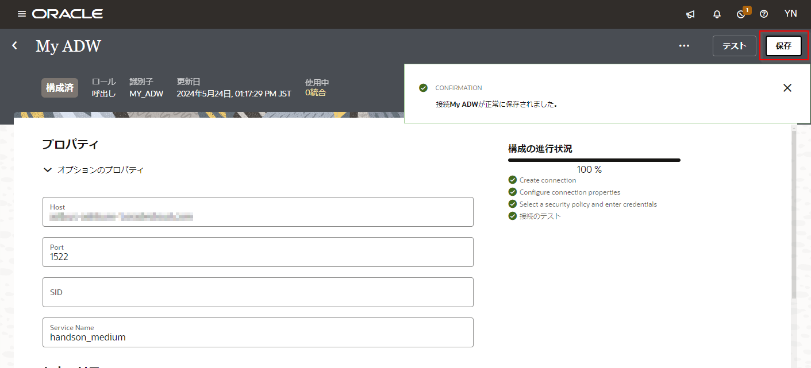

このチュートリアルは、 Oracle Integration Cloud を使用して RESAS-API が提供する市区町村データ を、Oracle ADW 上の CITIES という名前の表に保存してみます。
前提
このチュートリアルに沿って作業を進めるためには、次の設定が完了している必要があります。
- Oracle Integration Cloud と Oracle Autononmous Database (ADW) のインスタンス作成
- 市区町村データを格納する Oracle ADW の表の作成
- RESAS-API の API キーの取得
インスタンスの作成
このチュートリアルは、Oracle Integration Cloud と Oracle ADW のインスタンスの作成が完了し、コンソールにログインていることを前提としています。 まだインスタンスを作成していない場合は、次のページを参照してインスタンスを作成してください。
- Oracle Integration Cloud インスタンスの作成 または OIC インスタンスを作成する・ユーザーを追加する－アイデンティティ・ドメイン編
- Oracle ADW インスタンスの作成
表の作成
このチュートリアルでは、CITIES 表を使用します。
CITIES 表には、次の3つの列が定義されています。
| 列名 | データ型 | Null値の指定 | 備考 |
|---|---|---|---|
PREF_CODE |
NUMBER |
不可 | |
CITY_CODE |
VARCHAR2(10) |
不可 | 主キーに設定 |
CITY_NAME |
VARCHAR2(30) |
不可 | |
BIG_CITY_FLAG |
VARCHAR2(1) |
不可 |
以下のSQLを使ってテーブルを作成してください。
CREATE TABLE CITIES
(
PREF_CODE NUMBER(10) NOT NULL,
CITY_CODE VARCHAR2(10) NOT NULL,
CITY_NAME VARCHAR2(30) NOT NULL,
BIG_CITY_FLAG VARCHAR2(1) NOT NULL,
CONSTRAINT pk1 PRIMARY KEY(CITY_CODE)
);
RESAS-API の API キーの取得
RESAS-APIを利用するには API キーが必要です。 API キーは、利用登録することで取得できます。
このチュートリアルの表記方法
このチュートリアルで使用している表記方法は次のとおりです。
| 表記方法 | 説明 |
|---|---|
| 「太字」 | ボタン、各種フィールドのラベルなどの GUI 要素 |
| <プレースホルダ> | 使用する環境などによって置き換える部分を表すプレースホルダー |
固定幅フォント |
実行するコマンド、URL、サンプルコード、入力するテキスト |
接続の作成
Oracle Integration Cloud では、使用する API やデータベースなどへのアクセス情報を “接続” として定義します。 Oracle Integration Cloud は、多数のアダプタを提供しており、アクセスに必要な情報を入力するだけです。
このチュートリアルでは、２つの接続を作成します。
- RESAS-API 呼び出すための REST アダプタを使用した接続
- Oracle ADW アダプタを使用した接続
RESAS-API 呼び出すための REST アダプタを使用した接続
最初に作成するのは、 RESAS-API を呼び出すための REST アダプタ接続です。 REST アダプタ接続を作成する手順は次のとおりです。
-
Oracle Integration Cloud の 「ホーム」 ページを開いている場合は、ナビゲーション・ペインで 「設計」 をクリックします。
ナビゲーション・ペインに 「設計」 に関連するメニューが表示されます。 「接続」 をクリックします。
-
Oracle Integration Cloud の 「接続」 ページが表示されたら、ページの右上にある 「作成」 ボタンをクリックします。
-
「接続の作成」 ボックスが表示されます。
-
「検索」 フィールドに
RESTと入力して、表示を絞り込みます。 表示された 「REST」 アイコンをクリックします。 -
「接続の作成」 ボックスが表示されます。
作成する接続の基本情報を入力します。
入力したら右下の 「作成」 ボタンをクリックします。入力項目 入力する値 「名前」 RESAS-API「識別子」 RESAS-API（「名前」を入力すると自動的に設定されます）「ロール」 「呼び出し」 を選択 -
接続の詳細を入力するページが表示されます。 「接続プロパティ」 セクションでは、次のように値を入力します。
入力項目 入力する値 「Connection Type」 「REST API Base URL」 を選択 「Connection URL」 https://opendata.resas-portal.go.jp/api/v1 -
「セキュリティ」 セクションでは、次のように値を入力します。
入力項目 入力する値 「セキュリティ・ポリシー」 「API Key Based Authentication」 を選択 「APIキー」 RESAS-API から発行された API キーを入力 「APIキーの用途」 -H X-API-KEY: ${api-key} -
「接続プロパティ」 と 「セキュリティ」 セクションの値を入力したら、ページの右上に表示されている 「テスト」 ボタンをクリックします。
「接続プロパティ」 で指定した値が正しければ、ページの右上に成功したことを表すメッセージ 「接続 XXX が正常にテストされました。」 が表示されます。
-
テストに成功したら、ページの右上に表示されている 「保存」 ボタンをクリックします。
-
保存できたら、ページの左上に表示されている 「<」 （戻る）アイコンをクリックして、 「接続」 ページに戻ります。
Oracle ADW アダプタを使用した接続
Oracle ADW のウォレット・ファイルのダウンロード
Oracle ADW のデータベースにアクセスするには、ウォレット・ファイルが必要になります。 ウォレット・ファイルをダウンロードする手順は次のとおりです。
-
OCI コンソールにログインします。 ページの左側にあるナビゲーション・メニューから 「データベース」 セクションの 「Autonomous Data Warehouse」 を選択します。
-
使用する ADW インスタンスが作成された 「リージョン」 と 「コンパートメント」 を選択します。 使用する ADW インスタンスの表示名をクリックして詳細ページを開きます。 「データベース接続」 ボタンをクリックします。
-
「データベース接続」 ボックスが表示されます。 「ウォレット・タイプ」 では 「インスタンス・ウォレット」 を選択して、 「ウォレットのダウンロード」 ボタンをクリックします。

-
「ウォレットのダウンロード」 ボックスが表示されます。 ウォレットのパスワードを指定する必要があります。 「パスワード」 と 「パスワードの確認」 にパスワードを指定します。 ここで指定したパスワードは、 Oracle Integration Cloud で接続を作成する際に必要なので、忘れないようにしてください。
「ダウンロード」 ボタンをクリックすると、ウォレット・ファイル
Wallet_<DB名>.zipがダウンロードされます。 -
ダウンロードしたウォレット・ファイル
Wallet_<DB名>.zipに含まれているファイルtnsnames.oraを任意のテキスト・エディタで開き、接続に必要なホスト名とサービス名を確認します。tnsnames.oraには次のような3つのエントリが記述されています（改行を追加しています）。<DB名>_high = (description= (retry_count=20) (retry_delay=3) (address=(protocol=tcps)(port=1522)(host=xxx.yyy.oraclecloud.com)) (connect_data=(service_name=zzzzz_<DB名>_high.adwc.oraclecloud.com)) (security=(ssl_server_cert_dn="CN=adwc.uscom-east-1.oraclecloud.com,OU=Oracle BMCS US,O=Oracle Corporation,L=Redwood City,ST=California,C=US"))) <DB名>_low = (description= (retry_count=20) (retry_delay=3) (address=(protocol=tcps)(port=1522)(host=xxx.yyy.oraclecloud.com)) (connect_data=(service_name=zzzzz_<DB名>_low.adwc.oraclecloud.com)) (security=(ssl_server_cert_dn="CN=adwc.uscom-east-1.oraclecloud.com,OU=Oracle BMCS US,O=Oracle Corporation,L=Redwood City,ST=California,C=US"))) <DB名>_medium = (description= (retry_count=20) (retry_delay=3) (address=(protocol=tcps)(port=1522)(host=xxx.yyy.oraclecloud.com)) (connect_data=(service_name=zzzzz_<DB名>_medium.adwc.oraclecloud.com)) (security=(ssl_server_cert_dn="CN=adwc.uscom-east-1.oraclecloud.com,OU=Oracle BMCS US,O=Oracle Corporation,L=Redwood City,ST=California,C=US")))ホスト名は、 各エントリ内の
(address=(protocol=tcps)(port=1522)(host=xxx.yyy.oraclecloud.com))で指定されているhostの値です。 この例では、xxx.yyy.oraclecloud.comです （xxx.yyyの部分は、使用するウォレット・ファイル内のtnsnames.oraに記述されているものと置き換えてください）。サービス名は、次の3つのうちのどれか1つを選択できます:
<DB名>_high<DB名>_low<DB名>_medium
今回は、
<DB名>_mediumを使用することにします。 （<DB名>は、使用するウォレット・ファイル内のtnsnames.oraに記述されているものと置き換えてください）
Oracle Integration Cloud で接続を作成
ウォレット・ファイルをダウンロードし、接続情報を確認できたら、 Oracle Integration Cloud で ADW アダプタを使用した接続を作成します。 接続を作成する手順は次のとおりです。
-
Oralce Integration Cloud にログインし、 「接続」 ページを開きます。 「接続」 ページの右上にある 「作成」 ボタンをクリックします。
-
「接続の作成 - アダプタの選択」 ボックスが表示されたら、 「検索」 フィールドに
ADWと入力して、表示を絞り込みます。 表示された 「Oracle ADW」 アイコンをクリックします。 -
「接続の作成」 ボックスが表示されます。 作成する接続の基本情報を入力します。 入力したら右下の 「作成」 ボタンをクリックします。
入力項目 入力する値 「名前」 My ADW 「識別子」 MY_ADW 「ロール」 「呼び出し」 を選択 -
接続の詳細を入力するページが表示されます。 「接続プロパティ」 セクションでは、次のように値を入力します。
入力項目 入力する値 「Host」 ウォレット・ファイル内の tnsnames.oraから取得したホスト名「Port」 1522 「SID」 入力しない 「Service Name」 <DB名>_medium（<DB名>は、使用する環境のものと置き換えてください） -
「セキュリティ」 セクションでは、次のように値を入力します。
入力項目 入力する値 「セキュリティ・ポリシー」 「JDBC Over SSL」 を選択 「ウォレット」 アップロードボタンをクリックして、ウォレット・ファイル Wallet_<DB名>.zipをアップロード「ウォレット・パスワード」 ウォレット・ファイルをダウンロードする際に指定したパスワードを入力 「データベース・サービス・ユーザー名」 ADW インスタンスのユーザー名を入力 「パスワード」 ADW インスタンスのユーザーのパスワードを入力 -
「プロパティ」 と 「セキュリティ」 の値を入力したら、ページの右上に表示されている 「テスト」 ボタンをクリックします。
接続のテストに成功すると、 「接続 XXX が正常にテストされました。」 というメッセージがページの右上に表示されます。
-
テストに成功したら、ページの右上に表示されている 「保存」 ボタンをクリックします。

保存できたら、ページの左上にある 「<」 （戻る） アイコンをクリックして、「接続」 ページに戻ります。
統合の作成
Oracle Integration Cloud の “統合” は、システム間の連携の流れを定義したものです。 このチュートリアルで作成する統合は、次の処理を実行します。
- RESAS-API の市区町村 API を呼び出し、データを取得
- 取得したデータを Oracle ADW のテーブルに保存
統合の新規作成
-
Oralce Integration Cloud にログインします。 「設計」 ページを開いている場合は、ナビゲーション・ペインで 「統合」 をクリックします。
「ホーム」 ページを開いている場合は、ナビゲーション・ペインで 「設計」 をクリックして、 「統合」 を選択します。
-
「統合」 ページが表示されたら、ページの右上にある 「作成」 ボタンをクリックします。
-
「統合の作成」 ボックスが表示されます。 「開始方法の選択」 では 「スケジュール」 をクリックします。
-
「統合の作成」 ボックスが表示されます。 次の情報を入力する必要があります。
入力項目 入力する値 「名前」 Load Cities「識別子」 LOAD_CITIES(Load Cities と名前をつけると自動的に設定される)「バージョン」 01.00.0000（初期状態で入力されている値をそのまま使用）「ドキュメントURL」 入力しない 「キーワード」 入力しない 「パッケージ」 入力しない 「説明」 入力しない 入力したら右下の 「作成」 ボタンをクリックします。
-
統合が作成されると、キャンバス・ビューで表示されます。 「レイアウト」 を初期状態の 「垂直」 から 「水平」 に変更します。
-
「スケジュール」 アイコンの「…」から 「編集」 をクリックします。
-
「スケジュール・パラメータの構成」 ブロックが表示されます。ここでは統合処理を実行する際に渡す変数を定義します。今回はRESAS APIに渡す都道府県コード(PREF_CODE)を作成します。 「＋」 アイコンをクリックします。
-
「パラメータ名」 に
prefCode、 「値」 に1と入力します。 入力し終わったらキャンバスの余白をクリックするとページが閉じられます。
RESAS-API 呼び出しの設定
-
スケジュールから右に延びている矢印の中央あたりにカーソルを当てると「＋」アイコンが表示されるのでクリックします。
クリックするとロールが呼び出しに設定されている接続のリストが表示されるので、『RESAS-API 呼び出すための REST アダプタを使用した接続』で作成した接続 「RESAS-API」 をクリックします。
-
ボックスが表示されます。 「基本情報の構成」 では、次のように入力します。 入力したら、「続行」 ボタンをクリックします。
入力項目 入力する値 「エンドポイントにどのような名前をつけますか。」 GetCities「エンドポイントの相対リソースURIは何ですか。」 /cities「エンドポイントでどのアクションを実行しますか。」 「GET」 を選択 「このエンドポイントのパラメータを追加して確認」 チェックする 「このエンドポイントを構成してレスポンスを受信」 チェックする -
「リクエスト・パラメータの構成」 では、RESAS-API を呼び出す際に指定する問合せパラメータを指定します。 「問合せパラメータの指定」 セクションにあるテーブルの 「追加」 ボタンをクリックし、次のように入力します。
入力し終わったら、「続行」 ボタンをクリックします。入力項目 入力する値 「名前」 prefCode「データ型」 「integer」 を選択 -
「レスポンスの構成」 では、 REST-API から返ってくるレスポンスの形式を指定します。 「レスポンス・ペイロード」 で 「JSONサンプル」 を選択してから、 「<<< inline >>>」 リンクをクリックします。
-
「Enter Sample JSON」 に、RESAS-API の市区町村一覧が返すレスポンスのサンプルを入力します。 RESAS-API の市区町村一覧のドキュメント の 「sample」 セクションの JSON のコードブロックか、次のコードブロックをコピーして、「Enter Sample JSON」 のテキストエリアに、ペーストします。 「続行」 ボタンをクリックします。
{ "message": null, "result": [{ "prefCode": 1, "cityCode": "01100", "cityName": "札幌市", "bigCityFlag": "2" }, { "prefCode": 1, "cityCode": "01101", "cityName": "札幌市中央区", "bigCityFlag": "1" }, { "prefCode": 1, "cityCode": "01102", "cityName": "札幌市北区", "bigCityFlag": "1" }, { "prefCode": 1, "cityCode": "01103", "cityName": "札幌市東区", "bigCityFlag": "1" }, { "prefCode": 1, "cityCode": "01104", "cityName": "札幌市白石区", "bigCityFlag": "1" }, { "prefCode": 1, "cityCode": "01105", "cityName": "札幌市豊平区", "bigCityFlag": "1" }] } -
「レスポンスの構成」 ボックスの右上にある 「続行」 ボタンをクリックします。

-
「サマリー」 が表示されます。 「終了」 ボタンをクリックします。
-
キャンバス・ビューは次の図のような表示になっています。
- 「マップ先 GetCities」 は、REST API のリクエストにパラメータを指定する必要がある場合に使用するマッピングです。
このチュートリアルでは、スケジュール・パラメータ
prefCodeで指定した値を RESAS-API を呼び出す際に指定する問い合わせパラメータにマップする設定を行います。 - 「GetCities」 は、これまでに設定した REST API の呼び出しの設定です。
- 「マップ先 GetCities」 は、REST API のリクエストにパラメータを指定する必要がある場合に使用するマッピングです。
このチュートリアルでは、スケジュール・パラメータ
-
キャンバス・ビューで 「マップ GetCities」 を選択し、「…」から 「編集」 をクリックします。
-
「マップ先 GetCities」 ページが表示されます。
ページの左側に表示される 「Sources」 ツリーに 「prefCode」 が表示されていることを確認します。 この 「prefCode」 は、先ほど設定したスケジュール・パラメータです。
次に、ページの右側に表示されている 「Targets」 ツリーに 「GetCities Request (REST)」 → 「Query Parameters」 → 「Pref Code」 が表示されていることを確認します。 この 「prefCode」 は、RESAS-API の市区町村一覧 API を呼び出す際に指定する問い合わせパラメータです。
-
「Sources」 ツリーの 「prefCode」 を、 「Targets」 ツリーの 「Pref Code」 の上にドラッグ＆ドロップします。
「Sources」 ツリーの 「prefCode」 を、 「Targets」 ツリーの 「Pref Code」 が直線で結ばれます。
-
ページの右上にある 「検証」 ボタンをクリックします。
-
「マップ先 GetCitiesは正常に検証されました。」 というメッセージが表示されたら、 「<」 ボタンをクリックします。
-
これで、RESAS-API の市区町村一覧を取得するための設定が終わりました。 ここまでの設定を保存するために、ページの右上に表示される 「保存」 ボタンをクリックします。

Oracle ADW へのデータの書き込み
-
「呼び出し GetCities」から右に延びている矢印の中央あたりにカーソルを当てると「＋」アイコンが表示されるのでクリックします。
クリックするとロールが呼び出しに設定されている接続のリストが表示されるので、その中から『Oracle ADW アダプタを使用した接続』で作成した接続 「My ADW」 をクリックします。 -
ボックスが表示されます。 次のように 「基本情報の構成」 を入力します。
入力し終わったら、 「続行」 ボタンをクリックします。入力項目 入力する値 「エンドポイントにどのような名前をつけますか。」 MergeCities「どの操作を実行しますか。」 「Perform an Operation on a Table」 を選択 「どの操作を表で実行しますか。」 「Insert or Update (Merge)」 を選択 -
「表での操作の構成」 が表示されます。 「スキーマ」 では、市区町村データを保存する
CITIES表のスキーマを選択し、 「表タイプ」 では 「TABLE」 が選択されていることを確認したら、 「表タイプ」 フィールドの下にある 「検索」 ボタンをクリックします。「使用可能」 リストに 「CITIES」 が表示されています。 「CITIES」 を選択した状態で、 「>」 ボタンをクリックします。 「CITIES」 が、 「選択済み」 リストに移動したことを確認したら、 「表のインポート」 ボタンをクリックします。
-
「親データベース表の選択」 が表示されます。 今回はデータを保存するテーブルは
CITIESだけなので、初期状態のままでウィザードの右上にある 「続行」 ボタンをクリックします。 -
「サマリー」 が表示されます。 ウィザードの右上にある 「終了」 ボタンをクリックします。
-
キャンバス・ビューは次の図のような表示になっています。
- 「マップ MergeCities」 は、 Oracle ADW に保存するデータのマッピングの設定を行います。 次のセクションで設定します。
- 「呼出し MergeCities」 は、これまでに設定した Oracle ADW の呼び出しの設定です。
-
これで、RESAS-API の市区町村一覧のデータを Oracle ADW に保存するための設定が終わりました。 ここまでの設定を保存するために、ページの右上に表示される 「保存」 ボタンをクリックします。
データ・マッピングの設定
ここでは、RESAS-API により取得した市区町村一覧データと、Oracle ADW に保存するデータのマッピングの設定を行います。
-
キャンバス・ビューで、 「マップ MergeCities」 を選択します。 メニューの 「編集」 をクリックします。
-
データのマッピングの設定を行うためのマッパーが表示されます。 マッパーの画面左側に表示されている 「Sources」 ペインの 「GetCities Response (REST)」 → 「Execute Response」 → 「Response Wrapper」 → 「Result」 を、画面右側に表示されている 「Target」 ペインの 「MergeCities Request (Oracle ADW)」 → 「Cities」 にドラッグ＆ドロップします。
-
同様の手順で以下の項目をマッピングします。
-
「Sources」 ペインの 「prefCode」 を、 「Target」 ペインの 「prefCode」 にドラッグ＆ドロップします。
-
「Sources」 ペインの 「cityCode」 を、 「Target」 ペインの 「cityCode」 にドラッグ＆ドロップします。
-
「Sources」 ペインの 「cityName」 を、 「Target」 ペインの 「cityName」 にドラッグ＆ドロップします。
-
「Sources」 ペインの 「bigCityFlag」 を、 「Target」 ペインの 「bigCityFlag」 にドラッグ＆ドロップします。
-
-
画面右上にある 「検証」 ボタンをクリックして、マッピングが有効かどうかを確認します。
-
画面の上部に 「マップ先 XXXは正常に検証されました。」 というメッセージが表示されたら、 「<」 ボタンをクリックします。
トラッキングの設定
Oracle Integration Cloud では、作成した統合が実行状況をトラッキングするための設定を行う必要があります。 トラッキングの設定は次の手順で行います。
-
統合キャンバスの右上にある ビジネス識別子(I) アイコン をクリックします。
-
「ビジネス識別子」 ボックスが表示されます。 ボックス左側のツリーから 「schedule」 の下の 「startTime」 を、ボックスの右側に表示されているテーブルの 「プライマリ・ビジネス識別子」 の1行目にドラッグ＆ドロップします。
-
ボックス左側のツリーから 「$prefCode」 を、ボックスの右側に表示されているテーブルの 「プライマリ・ビジネス識別子」 列の2行目にドラッグ＆ドロップします。
キャンバスの余白部分をクリックして 「ビジネス識別子」 ボックスを閉じます。
-
ページの右上にある 「保存」 ボタンをクリックしてから 「<」 ボタンをクリックします。 「統合」 の一覧が表示されるページに戻ります。
統合の実行
作成した統合を実行してみましょう。
-
Oracle Integration Cloud で作成した統合を実行するには、まずアクティブ化します。 実行する統合にマウスポインタを合わせ、表示された 「アクティブ化」 アイコンをクリックします。
-
「統合のアクティブ化」 ボックスが表示されます。 「トレース・レベルの選択」を 「デバッグ」 にチェックして、ボックスの右下に表示されている 「アクティブ化」 ボタンをクリックします。
統合のステータスが 「アクティブ」 に変更されていることを確認します。
-
実行する統合にマウスポインタを合わせ、メニューから 「実行」 をクリックします。
-
今回はデフォルト値をそのまま使用することにして、ページの右上にある 「実行」 ボタンをクリックします。
デフォルト値とは異なる値を設定する場合は 「現在の値」 に入力します。
実行結果の確認
-
実行結果を確認してみましょう。 実行結果は、トラッキングの機能を使用して確認できます。
「実行」をクリックするとすぐに右側に「アクティビティ・ストリーム」というブロックが表示され、ここでログレベルの処理状況を確認することができます。
トラッキングの画面へは インスタンスID:XXX のリンクから遷移することができます。 -
トラッキングの画面へ遷移します。こちらでは実行結果を視覚的に確認することができます。
-
アクティビティ・ストリームにある砂時計のアイコンをクリックすると各処理にかかった時間を確認することもできます。
-
アクティビティ・ストリームを下にスクロールします。
「Process completed successfully」の表示を確認し、正常に終了していることを確認します。 -
トラッキングの画面はメニューからも遷移することができます。
メニューから 「可観測性」－「インスタンス」 に遷移すると実行された統合アプリケーションの一覧が表示されるので、詳細を確認したいインスタンス(実行済みの統合)をクリックします。 -
実行画面の インスタンスID:XXX のリンクと同じ画面に遷移することができます。
-
最後にADWからデータが正しく登録されているかを確認します。
以上でこのチュートリアルは終了です。